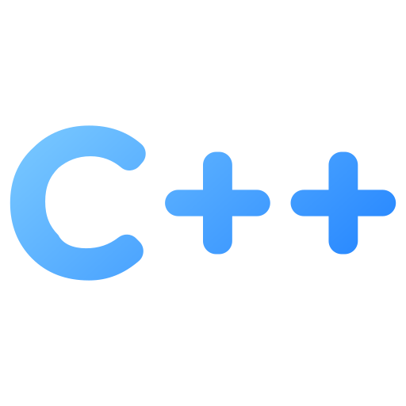

HABILIDADES




PROGRAMACION NUMERICA
ing: Fred Torres Cruz
codigo: 240252
La Programación Numérica es una disciplina dentro de la informática y las matemáticas aplicadas que se centra en el diseño, análisis e implementación de algoritmos que utilizan la aproximación numérica para resolver problemas de análisis matemático.
En términos sencillos:
trabajos encargados de programación numérica.
VER CODIGO Y DESCARGAR PDFs AQUÍ